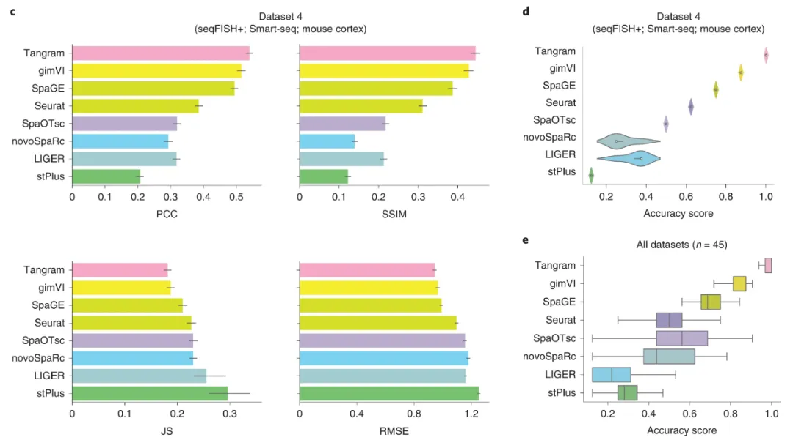
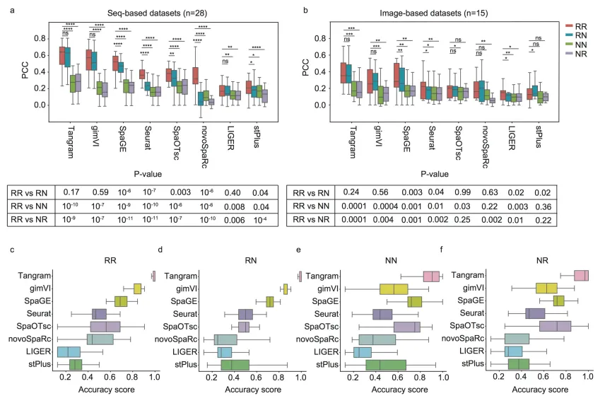
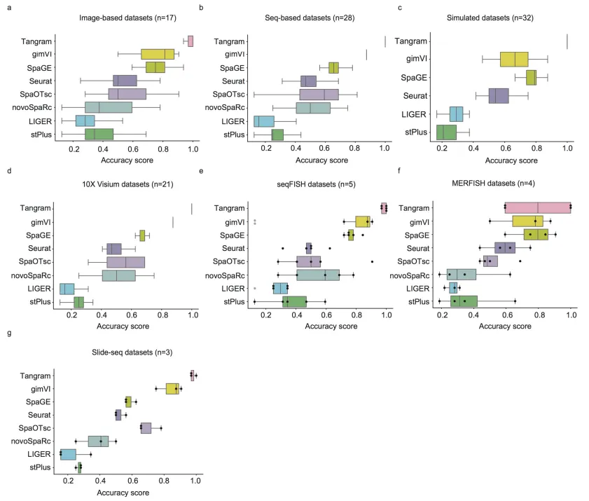
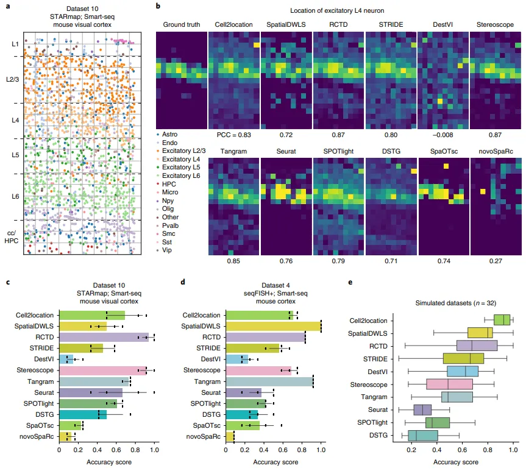
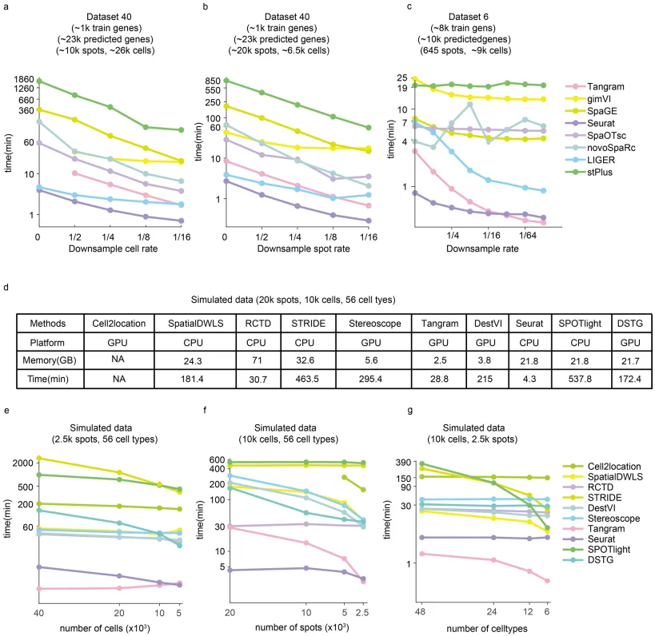
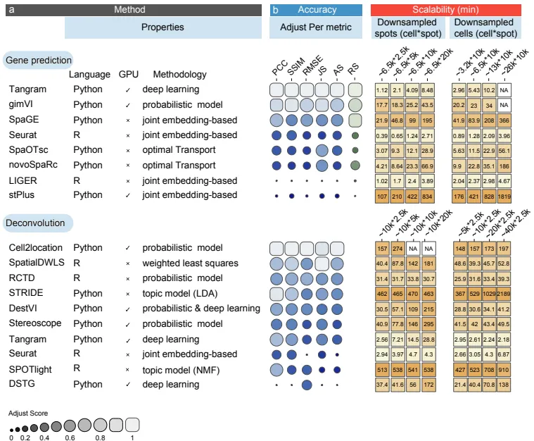

空间转录组与单细胞转录组整合分析工具大比拼
原文：https://mp.weixin.qq.com/s?__biz=MzAwMzIzOTk5OQ==&mid=2247500243&idx=1&sn=b0e513e85a202ec7ca4041a700a7ae10&chksm=9b3cb883ac4b3195cffd0398d880468b12dd068f9a9fd96b7d0f8aed8961be34293e6ff4a2bb#rd 合集：单细胞教程全收录 / 空间转录组 / 文献速递
写在前面
由于大部分的空间转录组的分辨率无法达到单细胞级别(Stereo-Seq除外)，因此目前空间转录组的数据分析还高程度地依赖于单细胞转录组数据的整合，以帮助空间转录组数据的表达量计算以及去卷积。这篇文章作者利用45个配对数据以及32个模拟数据评估了16种单细胞转录组与空间转录组的整合工具，发现Tangram 、gimVI、SpaGE在预测RNA的空间分布上更有优势，而Cell2location、SpatialDWLS、RCTD在细胞类型的去卷积上表现更佳。原文标题：
Benchmarking spatial and single-cell transcriptomics integration methods for transcript distribution prediction and cell type deconvolution
原文连接：https://www.nature.com/articles/s41592-022-01480-9
软件、功能与原理
| 首先，作者介绍了几款软件与它们的基本methods，我给整理了一下：工具 | 主要功能 | 原理 |
|---|---|---|
| gimVI | infer the likely spatial distribution | deep generative model |
| SpaGE | predicate the spatial distribution of underdetected transcripts | domain adaptation algorithm PRECISE、k-nearest-neighbor regression |
| Tangram | spatial alignment for scRNA-Seq data | non-convex optimization、 deep learning framework |
| Seurat | embed spatial and scRNA-Seq data into a common latent space | canonical correlation analysis |
| LIGER | predicate gene expression levels in space | integrative non-negative matrix factorization and shared factor neighborhood graphs |
| novoSpaRc&SpaOTsc | construct spatial metrics of cells | optimal transport |
| stPlus | predict spatial gene expression | auto-encoder、weighted k-nearest-neighbor |
| Seurat、Tangram、novoSpaRc、SpaOTsc | assign cells from scRNA-seq to spatial location in histological section |
Cell2location| estimate the abundance of each cell type at each spot|
RCTD| supervised learning to decompose cell type mixture|
SpatialDWLS| infer cell type composition| weight-least-squares approach Stereoscope| deconvolve the cell mixture| model-based probabilistic methods SPOTlight| deconvolution of spot| non-negative matrix factorization DSTG| deconvolutes spatial transcriptomics| graph-based convolutional networks STRIDE| deconvolutes cell type spatial transcriptomics| topic profilers training DestVI| delineate cell type proportions| variational inference and latent variable models
具体评估内容
基于以上软件与功能，作者展开了以下评估，我尽量给大家省流： 首先我们要明确，下文提到的空间转录组"ground truth"为通过变异系数挑选出的1000个高变RNA（如果足够）数据集。
1、预测RNA空间分布表达量利用交叉验证，作者计算了空间转录组与整合方法处理后矩阵之间的Person相关系数（Pearson correlation coefficient，PCC），并通过一些经典的marker来举例论证，此处省略。为了全局评估各类工具的准确性，作者还引入了structural similarity index(SSIM)、root mean square error(RMSE)、Jensen-Shannon divergence(JS)这几个参数，简单理解来说，PCC与SSIM越高、RMSE与JS越低，则代表该工具的预测越准确。由图1c可以看出Tangram 、gimVI 、SpaGE 的表现相较于其它工具明显更优。对于1d-e中的accuracy score而言，依旧是这三款工具遥遥领先。

图1
考虑到很多时候空间转录组与scRNA-Seq的输入矩阵格式可能有所不同，通常有normalization data(N)和raw data(R)两种。因此空间转录组与scRNA-Seq整合分析时的输入组合就有R-R、N-R、R-N、N-N这四种。作者同样评估了这四种输入方式对于分析精确度的影响。可以看出无论怎么切换输入方式，最优的工具仍是Tangram 、gimVI 、SpaGE ；而R-R、N-R、R-N、N-N四种输入方式中R-R为最优解(图2)。

图2
2、矩阵稀疏性
对于单细胞测序和空间转录组而言，它们得到的矩阵均是稀疏矩阵，这意味着矩阵中存在着大量的0值。矩阵稀疏性是指0元素在表达矩阵中的占比。不出意外，即使是在稀疏度大于70%的矩阵中，仍然是Tangram 、gimVI 、SpaGE 的AS值更高。

图3
3、去卷积
由于分辨率的原因，空间转录组的最小分辨率spot通常包含数个到数十个，这时就需要去卷积来拆分出每个spot包含的细胞信息。Seurat、SpaOTsc、Tangram、novoSpaRC、Cell2location、SpatialDWLS、RCTD、Stereoscope、DestVI、STRIDE、SPOTlight、DSTG均提供此功能。在spot均已被注释共包含1549个细胞、15个细胞类型的数据集10中，RCTD、Tangram 、Cell2location的PCC最高，而AS值最高的为RCTD与Stereoscope(图4b-c)。在数据集4中，Tangram 依旧可以排在第二名的位置(图4d)。

图4
4、计算性能
这算是大家最值得关注的问题，因为数据计算的完成度和精确性孰优孰劣可以争议，但对于相同样本量的计算时间却是一个可以直接衡量的指标，并且会即时得对各位分析人员带来体验感的好坏。对于各个数据集的计算时间来说，我们的老朋友Seurat和Tangram 稳定更优，相较于尾部的算法来说，甚至能节省99%的时间。这一模块可以说是本文最有价值的部分，感谢作者为大家排雷。

图5
最终作者用一张图梳理了各个软件基于的编程语言、计算依赖(CPU/GPU)、各个精确度衡量方式中的表现、相同细胞数量的计算时间。大家可以收藏查看：

总结：无脑选Tangram就完事了(如果数据合适)

如何联系我们
 公众号后台消息更新不及时，超过48h便不允许回复读者消息，这里给大家留一下领取资料、免费服务器(有root权限的共享服务器,注册即送200￥)的微信号 ，方便各位随时交流、提建议(科研任务繁重，回复不及时请见谅)。此外呼声一直很高的交流群 也建好了，欢迎大家入群讨论：永久免费的千人生信、科研交流群
公众号后台消息更新不及时，超过48h便不允许回复读者消息，这里给大家留一下领取资料、免费服务器(有root权限的共享服务器,注册即送200￥)的微信号 ，方便各位随时交流、提建议(科研任务繁重，回复不及时请见谅)。此外呼声一直很高的交流群 也建好了，欢迎大家入群讨论：永久免费的千人生信、科研交流群
大家可以阅读完这几篇之后添加给生信入门初学者的小贴士 如何搜索公众号过往发布内容

 您点的每个赞和在看，我都认真当成了喜欢
您点的每个赞和在看，我都认真当成了喜欢